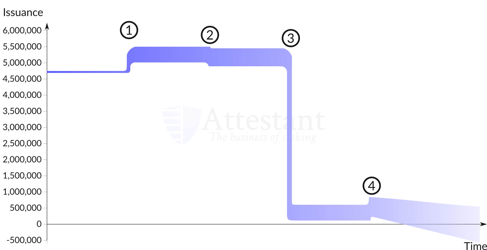

Stock to Flow Model Applied to Ethereum
Introduction
The Stock to Flow model is one of the most contentious Bitcoin investment theses. Developed for Bitcoin by @100TrillionUSD, it predicts the value of BTC based solely on its scarcity. Because the total supply and future issuance of BTC are well known, the scarcity of Bitcoin both in the past, present and future can be easily calculated. Bitcoin's total supply approaches a ceiling of 21 million coins, while the issuance of new coins is halved every 210,000 blocks. As block rewards decrease, the amount of new coins being produced relatie to overall supply diminishes, leading to an increase in apparent scarcity. According to proponents of the S2F model, rising scarcity will drive increased demand, making the market price of BTC go up. Here I want to analyze Ethereum, which has a very different supply schedule to Bitcoin, under the same S2F model. How does Ethereum compare to BTC in this light?Initial Look
Ethereum, of course, is a different beast. Firstly, it does not have a total supply cap. Therefore ETH issuance will occur forever, unless some changes are made to the protcol itself (Vitalik Buterin proposed a supply cap in 2018, although this has not been implemented). So, while the BTC S2F ratio will trend towards infinity as flow approaches 0, ETH S2F will always be essentially finite. Also, ETH does not have an easily predictable inflation rate like BTC. The issuance of ETH rewards is tied to the amount of Uncle Blocks being included over time. According to Attestant.io, uncles account for roughly 5% of Ethereum issuance. Additionally, there is a significant difference between ETH issuance on ETH1 (PoW Chain, 2 ETH block reward) and ETH2 (PoS) chain, which is expected to be function in the next year. Currently, ETH inflation stands at roughly 4.5%, but after the activation of PoS and the end of traditional ETHhash mining, inflation is set to drop to just .5% annually, which could severely increase the SF ratio over time. Complicating future issuance even further, EIP-1559 suggests burning up to 80% of transaction fees that would normally be included as a miner's reward. The proposal, brought forth by Vitalik Butern et al., aims to lower the cost of fees on the ETH chain and allow wallets to better automate fee calculation for users. Proposed in September 2019, it has not been integrated into ETH's source code yet. Taking all of this into account, I calculated the S2F ratio for ETH 1 between 2016 and 2020 (to May), and try to make a prediction of what the SF ratio will look like in the future based off available information about what ETH issuance will look like in the future.Historical S2F Rate
First, I wanted to examine the historical data of Ethereum. Although Ethereum is set to undergo major changes to its supply schedule in the coming months, it is still informative to see how ETH has behaved in regards to the S2F model up to this point. I collected data from etherscan.io on total supply and daily issuance of tokens going back to 2016. The SF ratio is defined asSF = stock / flow , where stock=total supply and flow=change in supply. I calculated this for each year between 2016 and 2020, discounting tokens that were sold as ICO funds. I assumed the total supply of ETH present before the beginning of its history on etherscan to be the supply that was already present as a result of the token sale. I believe this is a sound decision because the initial stock of ETH from ICO was massive, as ETH raised 18 million dollars, which at an intial rate of $.3 per ETH meant that roughly 60 million coins were created by this ICO. In fact, 72 million coins were included in the Ethereum genesis block, according to etherscan.io. Since these coins required no consensus "work" to be added to the network, they really aren't scarce at all. After adjusting for the funds raised at ICO, I found the following results:
| Year | SF | Year-End Market Cap |
|---|---|---|
| 2016 | 1.36 | 696,993,600 |
| 2017 | 2.67 | 73,170,170,967 |
| 2018 | 4.33 | 13,886,837,730 |
| 2019 | 7.46 | 14,139,765,786 |
| 2020 | 20.48 | 23,692,625,224 |
Interestingly, we can see that ETH's SF ratio has sharply increased into 2019, as issuance was cut by 33% at the end of 2018. At the same time the amount of ETH received by miners from uncle blocks also fell by more than half. Due to these factors ETH now has an SF ratio comparable to that of Bitcoin; placing in the monetary goods category along with BTC (as defined by @100trillionUSD). In the future, however, this will certainly change; ethereum issuance will decrease dramatically with ETH2.0 with inflation predicted to fall to just .5% - so although the uncapped supply of ETH means that in the long run, it can never be truly as scarce as Bitcoin, in the short term it could appear more scarce than BTC itself. This is because here we're looking at relative quantities, and not absolute ones. Ethereum will appear more scarce than Bitcoin (although these changes are human-directed) because Ethereum monetary policy is maleable. One of the pitfalls when working with a model such as S2F is that no external factors are accounted for. Ethereum can use its more flexible monetary policy to deflate itself in the short term (and Vitalik has made his intentions to do this quite clear), while Bitcoin chugs along its predictable emission curve towards 21 million coins. Although ETH looks attractive on paper, in terms of long term-goals, Bitcoin's predictable and unchangeable money issuance brings greater value and security to the table than ETH could ever hope to. 
image source: attestant.io
Data Methodology
The data I used are sourced from etherscan.io. I needed two datasets to perform this analysis: the growth of ethereum's total supply, and daily block reward. I downloaded the data as .csv files from etherscan, and merged the two columns into one spreadsheet. Using python, I binned the data into yearly entries and calculated:SF = (total supply at end of year x - ICO coins) / (sum of all block rewards in year x) . The number of ICO coins is defined by the number of coins created in the genesis block, which according to etherscan.io is roughly 72 million ETH. The etherscan data includes all types of block rewards, including those from uncle blocks. The result of this code are the SF values for each year. You can find the code I used on my Github page.
Limitations
The biggest limitation to applying this model to ETH rather than BTC is the initial supply of ETH. ETH was an ICO coin, with many tokens that were released into the circulating supply that were not created in the same manner as more recent coins mined via proof-of-work. So ETH entered the game with a massive stock, while that of BTC had to increase much more slowly over time. Also, this model is shortsighted; there is significant possibly for greater deflationary pressure on the value of ETH over time. Additionally, one must ask the question: "is demand for ETH saturated?" That is to say, if there is plenty of ETH to go around, does a low amount of yearly issuance affect the actual value of the network that much? That will be a second question I will try to answer later.Conclusion
Ethereum, being fundamentally different from Bitcoin (and thus from other traditionally scarce goods like gold that bitcoin somewhat emulates), is difficult to analyze in terms of s2f alone. Other factors must be considered in assesing the future growth of Ethereum. Because ETH is not purely a store of value, but has computational utility, it must be examined in this light to obtain the most complete picture. Overall, S2F is not an effective way to model the value of Ethereum.Sources
EIP960Charting Ethereum Issuance
EIP1559
Modeling Bitcoin Value with Scarcity
ETH Supply (etherscan)
>ETH2.0 Will More than Halve Annual Issuance of Tokens to Two Million, Says co-founder